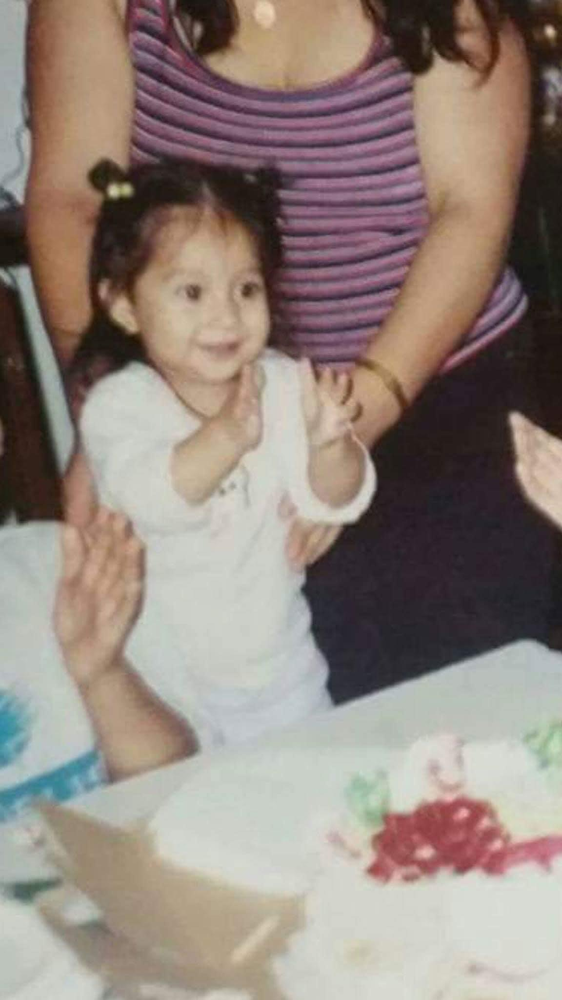

I want to create media that allows me to communicate to others what I cannot express verbally. Creating media that translates what I am thinking or experiencing at different moments in my life can let me reflect on different stages of growth or experiences that others can connect to. Through the use of videos and images I use everyday objects and places to visualize different ideas that people can relate to. I am still learning how to use tools like photoshop, premiere pro, and illustrator to visualize my ideas. Once my skills improve and I become more comfortable exploring these tools and using them in my everyday life, I feel my projects will also improve and allow me to communicate what I want into an images, videos or different forms of media. A lot of the media I consume is based on reality and focuses on mundane, everyday objects or places like train stations, alleyways, buildings. In my spare time I like to take pictures of things that I feel are interesting but may not be interesting to others. I like to explore the idea of documenting one's growth through their projects. I like to work in digital media because it allows me to use editing tools to help capture what I envision and refine those ideas. I want people to connect to my media through identifying and understanding in their own way what the message might be in my work. My background plays a role in determining what stories I wish to tell and how I tell them. I would like to explore the different forms of mixed media, and digital media because it would allow me to explore different tools and how to use things such as illustrator, premiere pro, and languages like html and css to improve my website and arrange my work in a more appealing way. My previous experience in a film program allowed me to translate some knowledge when it comes to using tools on adobe but there is much left to learn and I hope to use the experience in my personal work as well. At the end of the course I hope to utilize the information I've learned to better document my growth as a person and an artist.
